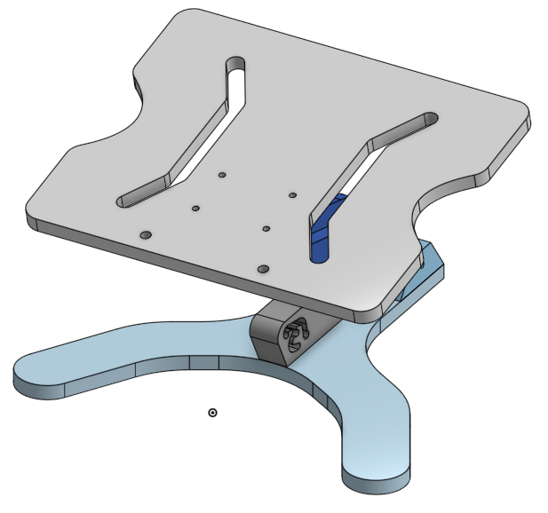
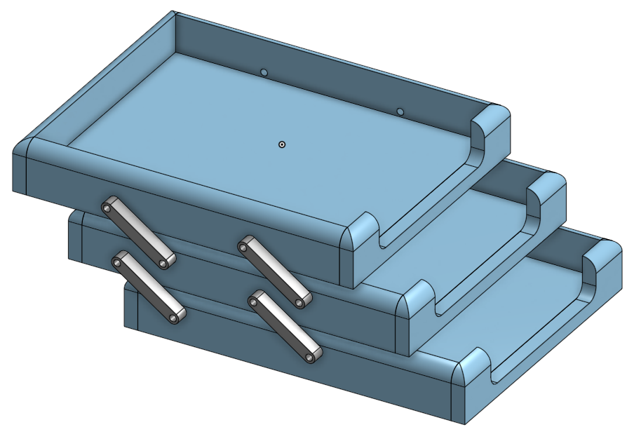
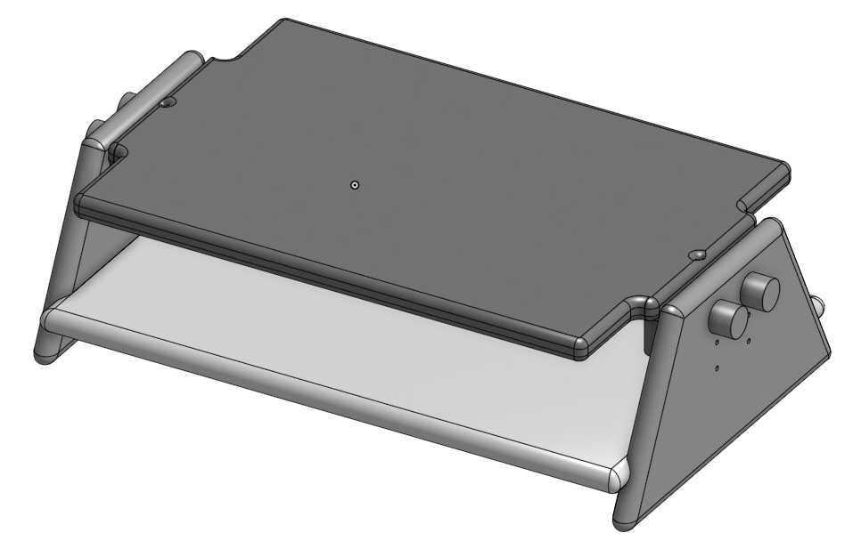

¡Somos ESDEK, un proyecto con la meta de proporcionarte los mejores artículos de oficina!
Nos enfocamos en fabricación de muebles o artículos para oficina en madera,
que busquen hacer del trabajo una experiencia más cómoda y amigable.
A continuación encontrarás nuestros productos.
Soporte graduable a 4 alturas e inclinaciones diferentes. Posee un diseño
ergonómico y es multifuncional.
Dimesiones:
Análisis:
Está hecho en madera, posee juntas de tipo pasador metálico y un eslabón
retenedor metálico. Está pintado en color negro, tiene 4 eslabones,
la base, el acoplador, el soporte o cabeza y el retenedor.
En su manufactura se involucran los siguientes procesos:

Brazo Graduable para Laptop [2].
3 niveles de bandejas articuladas que permiten desplazar una sobre la otra para poder organizar
una gran cantidad de documentos.
Dimesiones:
Análisis:
Está hecho en madera, posee juntas de tipo pasador metálico y está pintado en color negro.
Tiene 11 eslabones en madera, 3 contenedores y 4 acopladores por lado.
Se involucran los siguientes procesos en su manufactura:

Soporte de 3 alturas para monitor con bandeja para documentos.
Las alturas se gradúan utilizando dos pasadores que se puede cambiar de orificio.
Dimesiones:
Análisis:
Está hecho en madera, posee juntas de tipo pasador metálico y está pintado en color negro.
Consta de 3 partes de madera independientes, que son 2 soportes laterales, una mesa principal y
una mesa secundaria.
Se involucran los siguientes procesos en su manufactura:

Mesa Múltiple de 3 Alturas [4].
En Colombia hoy en día operan más de 50 bancos y que se encuentran en proceso de apertura de
sucursales luego de la pandemia.
En promedio, Bancolombia, Davivienda y el Banco agrario cuentan cada uno con 620 sucursales en
el País, en las cuales trabajan aproximadamente 20 mil personas.
Tomando el 5% de la cantidad total de empleados oficinistas que se estimó con la información
de los bancos se considera una producción anual de 4000 unidades de cada producto.
Esta producción puede aumentar en caso de un pedido masivo a causa de aperturas de nuevas
oficinas o bien por el aumento de la demanda de clientes particulares.
Nota: Se toma el 5% pensando en que la vida útil de los productos de oficina puede rondar los
5 años e intentando incluir posibles compradores no necesariamente incluidos en el perfil de
nuestro consumidor principal, como lo son estudiantes, emprendedores, home officers y equivalentes.
Resumen de producción esperada para cada producto: